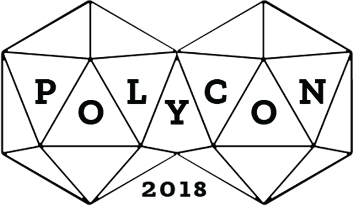

Poly-Conference focus of disseminating diverse art, design and media technology.
Redesign of the polycon website for the collage “The One Academy", which will let user to feel more updated & modern with the new layout, since the previous website design totally is diffrent style and doesn’t perform this task.
The logo of the website is a combination of the polygon & Poly-Conference. The polygon is form with equal angles, the reason using polygon to form the logo is mean that every person come to polycon is equal, no comparing with each other. The aim is to join together and learn new thing from other people in this event.
next project